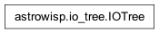

astrowisp.io_tree module
Class Inheritance Diagram
Define a function for intefracing with the astrowisp shared library.
- class astrowisp.io_tree.IOTree(tool_or_configuration, version_info='')[source]
Bases:
objectInterface for extracting entries from an IO::H5IODataTree.
- __init__(tool_or_configuration, version_info='')[source]
Create a tree with just the given configuration.
- Parameters:
tool_or_configuration – The configuration object created by the library for the tool which will be using the configuration tree or the tool itself.
version_info – Information about the version of the tool/scripts/… using this tree. It is safe to leave this empty, if it is not required as an entry in the tree.
- Returns:
None
- defined_quantity_names()[source]
Return a list of the quantities with non-empty values in the tree.
- Parameters:
None
- Returns:
The full names of the quantities with available data using dot as a separator between leves in the tree.
- Return type:
[str]
- get(quantity, dtype=<class 'ctypes.c_double'>, shape=None)[source]
Return the given quantity as a proper python object.
- Parameters:
- Returns:
The values of the quantity. The return type is always an array, even for sintgle valued quantities. In the latter case, the shape is (1,).
- Return type:
numpy.ndarray(shape=shape, dtype=dtype)
- get_psfmap_variables(image_index, num_variables, num_sources)[source]
Return the values of the PSF map variables for all sources in an image.
- Parameters:
image_index – The index of the image for which to return the values of the variables as supplied to PSF fitting.
num_variables – The number of variables used for PSF fitting.
num_sources – The number of sources in the selected image.
- Returns:
Array with records named as the PSF map variables and entries containing the values of the variables for all sources in the image identified by image_index.
- Return type:
numpy.ndarray(dtype=float, shape=(num_variables, num_sources)
- set_aperture_photometry_inputs(*, source_data, star_shape_grid, star_shape_map_terms, star_shape_map_coefficients, magnitude_1adu=None, image_index=0)[source]
Add to the tree all the information required for aperture photometry.
- Parameters:
source_data (structured numpy.array) – Should contain informaiton about all sources to do apreture photometry on as fields. At least the following floating point fields must be present: x, y, bg, bg_err, any variables used by the PSF map, and either flux and flux_err or mag and mag_err. It must also contain a string field id of source IDs and an unsigned integer field bg_npix.
star_shape_grid (2-D iterable) – The grid boundaries on which the star shape is being modeled.
star_shape_map_terms (2-D numpy array) – The values of the terms required to evaluate the PSF/PRF map for each source. First dimension should iterate over sources and second over expansion terms.
magnitude_1adu (float) – The magnitude that corresponds to a flux of 1ADU. Only required if relying on magnitudes to get star shape amplitudes.
star_shape_map_coefficients (4-D numpy.array) – The coefficients in front of all terms. See bicubic PSf model for details.
- Returns:
None
- set_star_shape_map(grid, coefficients)[source]
Add to tree all entries that define the star shape map.
- Parameters:
grid (2-D iterable) – The grid on which the star shape is represented.
map_terms (str) – The expression defining the terms the star shape parameters depend on.
coefficients (4-D numpy.array) – The coefficients of the map. See :class:fit_star_shape for details.
- Returns:
None
- type_string = {<class 'ctypes.c_bool'>: 'bool', <class 'ctypes.c_byte'>: 'char', <class 'ctypes.c_char'>: 'char', <class 'ctypes.c_double'>: 'double', <class 'ctypes.c_int'>: 'int', <class 'ctypes.c_long'>: 'long', <class 'ctypes.c_short'>: 'short', <class 'ctypes.c_ubyte'>: 'uchar', <class 'ctypes.c_uint'>: 'uint', <class 'ctypes.c_ulong'>: 'ulong', <class 'ctypes.c_ushort'>: 'ushort'}